MYSQLI扩展
案例：MYSQLI实现后台新闻管理系统
预览效果
==列表页==：
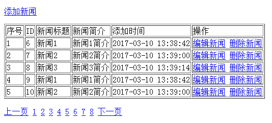
==添加新闻页==：
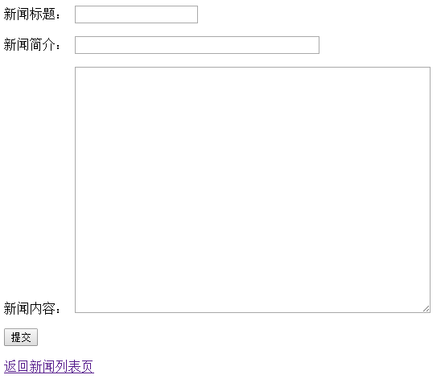
==编辑新闻页==：
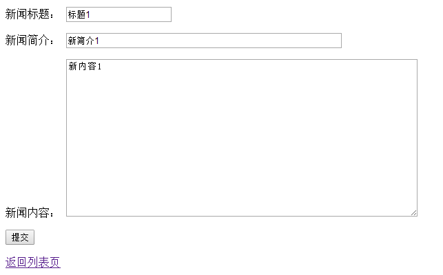
功能分析
- 新闻列表页；
- 新闻添加页和添加功能；
- 新闻编辑页和编辑功能；
- 删除功能；
- 分页功能；
建表
创建一个新闻表，表字段的要求如下：
1 | ##建表字段要求： |
实现列表页
==步骤==：
第一步，构建一个名为common.php的文件，
1 |
|
第二步，构建一个名为list.php文件，代码如下
1 | <?php |
第三步，访问list.php页面，效果如下
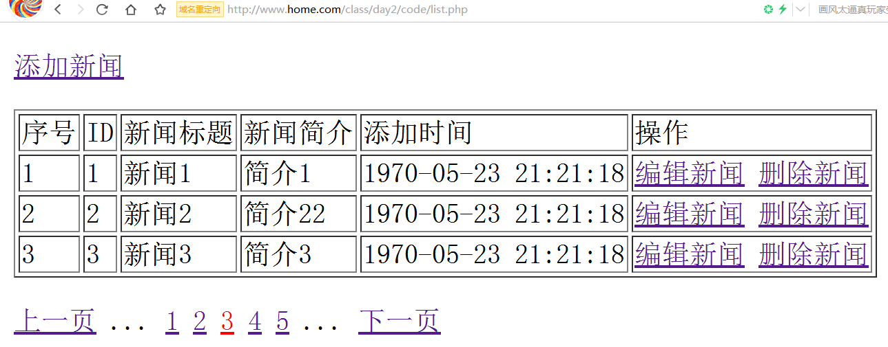
实现添加页面和功能
==步骤==：
第一步，构建名为ad.php的文件，代码如下，
1 |
|
第二步，构建名为adh.php的程序页面，代码如下
1 |
|
实现修改页面和功能
==步骤==：
第一步，构建名为upd.php的程序页面，代码如下：
1 | <?php |
第二步，构建名为updh.php的程序页面，
1 |
|
实现删除功能
==步骤==：
第一步，构建名为del.php的程序页面，代码如下：
1 |
|
实现分页功能
思路分析
左半边
当前页就是左边界
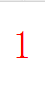
当前页的上一页为左边界
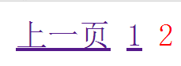
当前页的上两页为左边界
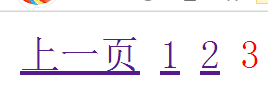
其他情况
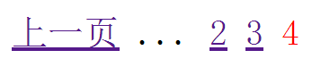
右半边
当前页就是右边界
当前页的下一页为右边界
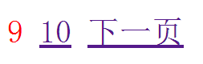
当前页的下两页为右边界
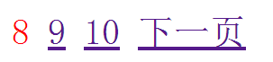
其他情况
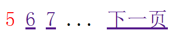
==步骤==：
第一步，构建一个名为pageHtml.php的文件，代码如下：
1 | /** |
第二步，在list.php中构建分页参数，
1 |
|
4. 全天总结
连库基本操作函数
mysqli_connect函数 连库和选择默认数据库的
mysqli_set_charset函数 设置字符集的
mysqli_select_db函数 切换选择新的数据库的
执行增删改操作的函数
mysqli_query函数 执行增删改SQL语句的，成功返回true,失败返回false
执行查询操作的函数
mysqli_query函数 执行查询SQL语句的，返回的是一个对象的结果集
mysqli_fetch_assoc函数 解析结果集得到一条数据记录的，获得的数据是一个关联类型的数组
mysqli_fetch_row函数 解析结果集得到一条数据记录的，获得的数据是一个索引类型的数组
mysqli_fetch_all函数 解析结果集得到所有数据记录的，可以指定第二个参数，第二个参数可以是
MYSQLI_NUM 返回索引数据数组 （默认的）
MYSQLI_ASSOC 返回关联数据数组
MYSQLI_BOTH 返回的数据即包含关联类型的数据，也包含索引类型的数据